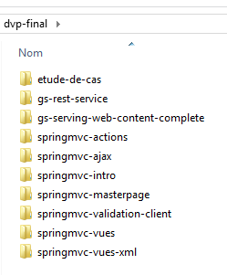
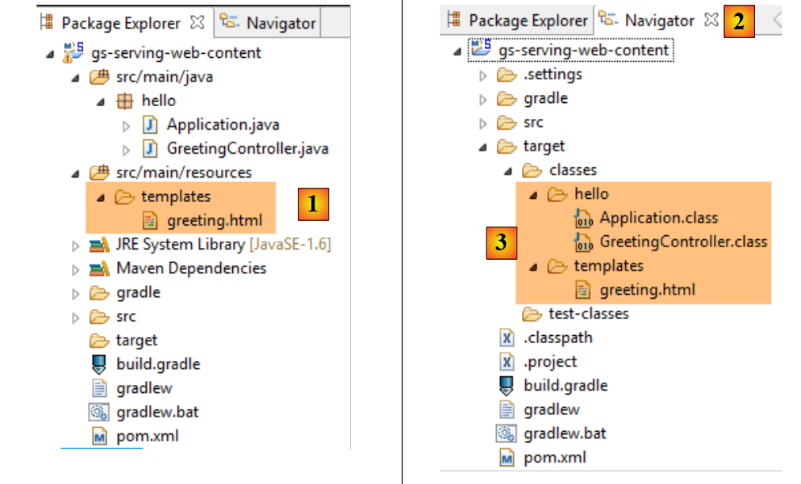
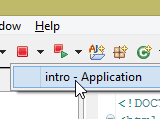
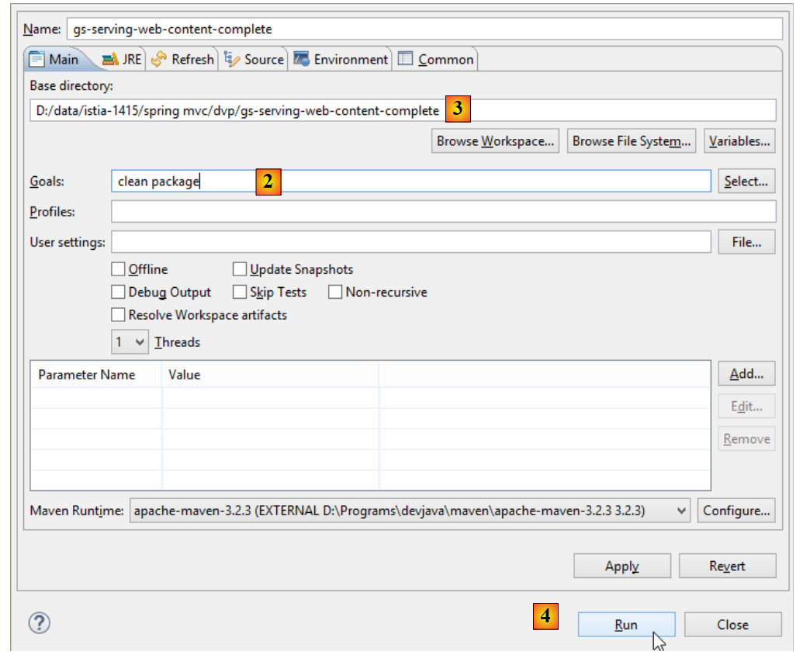
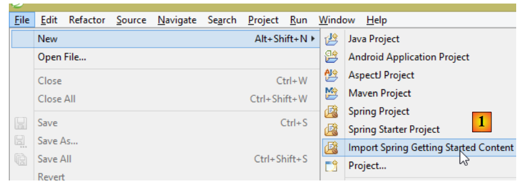
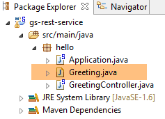
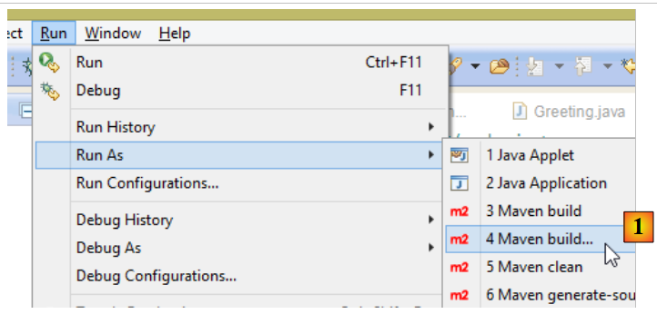
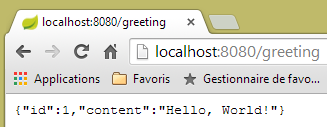

1. 简介
本文档的 PDF 版本可在此处获取 |HERE|。
本文档的示例可通过 |HERE| 获取。
本文旨在通过实例介绍 Spring MVC 的重要概念，这是一个 Java Web 框架，为根据 MVC 模型（模型-视图-控制器）开发 Web 应用程序提供了框架。 Spring MVC是Spring [http://projects.spring.io/spring-framework/]生态系统的一个分支。我们还将介绍Thymeleaf [http://www.thymeleaf.org/]视图引擎。
本课程面向真正精通 Java 语言的读者。无需具备 Web 编程知识。
尽管本文详尽，但可能仍不完整。Spring 是一个庞大的框架，拥有众多分支。若要深入了解 Spring MVC，可参考以下资料：
- Spring 框架参考文档 [http://docs.spring.io/spring/docs/current/spring-framework-reference/pdf/spring-framework-reference.pdf]；
- 大量 Spring 教程可在 URL [http://spring.io/guides] 处找到
- 专门介绍 Spring 的 [developpez.com] 网站。
本文档的编写方式使得即使没有电脑在手也能阅读。因此，文中提供了大量屏幕截图。
1.1. Sources
本文档有两个主要来源：
- [通过实例了解 ASP.NET MVC 框架 (2013)]。Spring MVC 与 ASP.NET MVC 是两个类似的框架，后者是在前者问世很久之后才构建的。 为了能够比较这两个框架，我采用了与ASP.NET和MVC文档中相同的步骤；
- 关于 ASP.NET 和 MVC 的文档目前（2014 年 12 月）尚未包含其解决方案的案例研究。我在此采用了 [Tutoriel AngularJS / Spring 4] 文档中的案例，并对其进行了如下修改：
- [客户端/服务器示例 - AngularJS 1.x / Spring 4 (2014)]中的案例研究涉及一个客户端/服务器应用程序，其中服务器是一个基于Spring构建的Web服务（jSON），而客户端是一个Web客户端（AngularJS），
- 本文档中，我们沿用了相同的Web服务 / jSON，但客户端是一个两层Web应用程序 [client jQuery] / [service web / jSON]；
除了这些资料外，我还上网搜索了问题的答案。其中，[http://stackoverflow.com/]网站对我特别有帮助。
1.2. 使用的工具
以下示例已在以下环境中进行测试：
- Windows 8.1 Pro 64位系统；
- JDK 1.8；
- IDE Spring Tool Suite 3.6.3（参见第9.3节）；
- Chrome 浏览器（未使用其他浏览器）；
- Chrome 扩展程序 [Advanced Rest Client]（参见第 9.6 节）；
请注意 JDK 1.8。本案例研究中的一种方法使用了 Java 8 中 [java.lang] 包中的方法。
所有示例均为 Maven 项目，可通过 Eclipse、NetBeans 任意打开。下文中的屏幕截图均来自 Spring Tool Suite（Eclipse 的一个变体）。
1.3. 示例
示例可通过URL和 [HERE] 以zip文件的形式下载。
 |
要将所有项目加载到 STS 中，请按以下步骤操作：
 |
 |
- 在 [1-3] 中，导入 Maven 项目；
 |
- 在 [4] 中，指定示例文件夹；
- 在 [5] 中，选择文件夹中的所有项目；
- 在 [6] 中，确认；
- 在 [7] 中，查看已导入的项目；
1.4. Spring MVC在Web应用中的作用
让我们将 Spring MVC 置于 Web 应用程序的开发中。通常，该应用程序将基于如下所示的多层架构构建：
 |
- 层是与Web应用程序用户接触的层。用户通过浏览器显示的网页与Web应用程序进行交互。Spring MVC就位于这一层，且仅位于这一层；
- [métier]层实现应用程序的管理规则，例如工资或发票的计算。 该层通过 [DAO] 层使用来自 [Web] 层和 SGBD 层的数据；
- [DAO] 层（数据访问对象）、[ORM] 层（对象关系映射器）以及 JDBC 驱动程序负责管理对 SGBD 层数据的访问。 [ORM] 层在 [DAO] 层处理的对象与关系型数据库表的行和列之间架起了一座桥梁。此处我们将使用 Hibernate（ORM）。 一种名为 JPA（Java Persistence API）的规范，允许对所使用的 ORM 进行抽象，前提是该 ORM 实现了这些规范。 Hibernate及其他Java ORM便是如此。因此，我们将ORM层称为JPA层；
- 各层的集成由 Spring 框架完成；
下文中给出的多数示例将仅使用一个层，即 [Web] 层：
 |
不过，本文最后将演示如何构建一个多层Web应用程序：
 |
浏览器将连接到由 Spring 实现的 [Web1] 应用程序 / Thymeleaf 实现的 Web 应用程序，该应用程序将从同样由 Spring MVC 实现的 Web 服务 [Web2] 中获取数据。该第二个 Web 应用程序将访问数据库。
1.5. Spring MVC
Spring MVC 通过以下方式实现了所谓的 MVC 架构模式（模型-视图-控制器）：
 |
客户端请求的处理流程如下：
- 请求 - 请求的 URL 采用 http://machine:port/contexte/Action/param1/param2/....?p1=v1&p2=v2&... 格式[Front Controller] 使用配置文件或 Java 注解将请求“路由”到正确的控制器以及该控制器内的正确操作。 为此，它会利用 URL 中的 [Action] 字段。URL 和 [/param1/param2/...] 的其余部分由可选参数组成，这些参数将传递给操作。 此处的MVC的C字段即为字符串[Front Controller, Contrôleur, Action]。若无任何控制器能处理所请求的操作，Web服务器将返回“未找到所请求的URL”的响应。
- 处理
- 所选操作可以利用 [Front Controller] 传递给它的 parami 参数。这些参数可能来自多个来源：
- 来自 URL 的路径 [/param1/param2/...]，
- 来自 URL 的 [p1=v1&p2=v2] 参数，来自 ,
- 浏览器随请求发送的参数；
- 在处理用户请求时，该操作可能需要 [métier] 和 [2b] 层。一旦处理了客户端的请求，该操作可能会触发各种响应。一个典型的例子是：
- 如果请求无法正确处理，则返回错误页面
- 否则显示确认页面
- 该操作会要求显示某个视图 [3]。该视图将显示被称为视图模型的数据。这就是 MVC 中的 M。 该操作将创建视图模型 M [2c]，并要求显示视图 V [3]；
- 响应——选定的视图V使用动作构建的模型M来初始化响应HTML中的动态部分，随后将该响应发送给客户端。
现在，让我们明确 Web 架构 MVC 与分层架构之间的关系。根据对模型的定义，这两个概念可能相关，也可能无关。以一个单层 Spring Web 应用程序 MVC 为例：
 |
如果我们使用 Spring MVC 实现 [Web] 层，那么虽然会形成 MVC Web 架构，但并非多层架构。 在此情况下，[web]层将负责所有工作：展示、业务逻辑和数据访问。这些工作将由Action类来完成。
现在，让我们考虑一种多层Web架构：
 |
[Web]层可以在不使用框架且不遵循MVC模型的情况下实现。虽然这确实是一种多层架构，但Web层并未实现MVC模型。
例如，在 .NET 环境中，上述 [Web] 层可以通过 ASP.NET 和 MVC 来实现，从而形成一种分层架构，其中 [Web] 层属于 MVC 类型。 完成上述操作后，可以将该 ASP.NET MVC 层替换为经典的 ASP.NET 层（WebForms），同时保持其余部分 （业务层、DAO、ORM）保持不变。 此时便形成了一个分层架构，其中 [Web] 层不再属于 MVC 类型。
在 MVC 中，我们提到模型 M 即视图 V（c.a.d）所展示的数据集合。这里给出 MVC 模型 M 的另一种定义：
 |
许多作者认为，位于 [Web] 层右侧的内容构成了 MVC 的模型 M。为避免歧义，我们可以这样表述：
- 域模型（指 [Web] 层右侧的所有内容）
- 当指代视图 V 所显示的数据时，称为“视图模型”
下文中，“M模型”一词将专指视图V的模型。
1.6. 首个 Spring 项目 MVC
从现在起，我们将使用 Spring Tool Suite（IDE），这是一款为 Spring 定制的 Eclipse 变体。[http://spring.io/guides] 网站提供了入门教程，帮助您了解 Spring 生态系统。 我们将参考其中一个教程，了解 Spring 项目所需的 Maven 配置。
注：大多数初学者可能无法完全理解项目的细节。这并不重要。这些细节将在本文后续部分进行说明。我们只需按照步骤操作即可。
1.6.1. 演示项目
 |
- 在 [1] 中，我们导入了一个 Spring 指南；
 |
- 在 [2] 中，我们选择示例 [Serving Web Content]；
- 在 [3] 中，我们选择 Maven 项目；
- 在 [4] 中，我们选用指南的最终版本；
- 在 [5] 中，进行确认；
- 在 [6] 中，导入该项目；
让我们来查看该项目，首先是其Maven配置。
1.6.2. Maven配置
文件 [pom.xml] 内容如下：
<?xml version="1.0" encoding="UTF-8"?>
<project xmlns="http://maven.apache.org/POM/4.0.0" xmlns:xsi="http://www.w3.org/2001/XMLSchema-instance"
xsi:schemaLocation="http://maven.apache.org/POM/4.0.0 http://maven.apache.org/xsd/maven-4.0.0.xsd">
<modelVersion>4.0.0</modelVersion>
<groupId>org.springframework</groupId>
<artifactId>gs-serving-web-content</artifactId>
<version>0.1.0</version>
<parent>
<groupId>org.springframework.boot</groupId>
<artifactId>spring-boot-starter-parent</artifactId>
<version>1.1.9.RELEASE</version>
</parent>
<dependencies>
<dependency>
<groupId>org.springframework.boot</groupId>
<artifactId>spring-boot-starter-thymeleaf</artifactId>
</dependency>
</dependencies>
<properties>
<start-class>hello.Application</start-class>
</properties>
<build>
<plugins>
<plugin>
<groupId>org.springframework.boot</groupId>
<artifactId>spring-boot-maven-plugin</artifactId>
</plugin>
</plugins>
</build>
<repositories>
<repository>
<id>spring-milestone</id>
<url>https://repo.spring.io/libs-release</url>
</repository>
</repositories>
<pluginRepositories>
<pluginRepository>
<id>spring-milestone</id>
<url>https://repo.spring.io/libs-release</url>
</pluginRepository>
</pluginRepositories>
</project>
- 第 6-8 行：Maven 项目的属性。缺少一个 [<packaging>] 标签，该标签用于指定 Maven 编译生成的文件类型。由于缺少该标签，系统将使用 [jar] 类型。 因此，该应用程序是一个控制台类型的可执行应用程序，而非 Web 应用程序（如果是 Web 应用程序，其打包类型应为 [war]）；
- 第10-14行：该Maven项目有一个父项目[spring-boot-starter-parent]，它定义了项目的大部分依赖。如果这些依赖已足够，则无需添加；否则，需补充缺失的依赖；
- 第17-20行：[spring-boot-starter-thymeleaf]构建产物包含Spring项目MVC所需的库，该Spring项目将与名为[Thymeleaf]的视图引擎协同工作。 该工件包含大量库，其中包括一个嵌入式 Tomcat 服务器的库。应用程序将在该服务器上运行；
该配置包含的库数量非常多：
 |  |
上图所示为 Tomcat 服务器的归档文件。
Spring Boot 是 Spring 生态系统的一个分支 [http://projects.spring.io/spring-boot/]。该项目旨在最大限度地减少 Spring 项目的配置工作。为此，Spring Boot 会根据项目 Classpath 中存在的依赖项进行自动配置。 Spring Boot 提供了许多开箱即用的依赖项。因此，在之前的 Maven 项目中发现的 [spring-boot-starter-thymeleaf] 依赖项，会为使用 [Thymeleaf] 视图引擎的 Spring 应用程序 MVC 引入所有必要的依赖项。凭借以下两个特点：
- 开箱即用的依赖项；
- 基于这些依赖和“合理”的默认值进行自动配置，我们可以非常快速地构建出一个可运行的 Spring MVC 应用程序。本文研究的项目正是如此；
1.6.3. Spring MVC 应用程序的架构
Spring MVC 实现了所谓的 MVC 架构模型（模型 – 视图 – 控制器）：
 |
客户端请求的处理流程如下：
- 请求——所请求的 URL 采用 http://machine:port/contexte/Action/param1/param2/....?p1=v1&p2=v2&... 格式[Dispatcher Servlet] 是 Spring 中处理传入 URL 的类。 它将 URL “路由”到负责处理它的操作。这些操作是名为 [Contrôleurs] 的特定类的方法。此处的 MVC 的 C 部分是字符串 [Dispatcher Servlet, Contrôleur, Action]。 如果未配置任何操作来处理传入的 URL，则 [Dispatcher Servlet] Servlet 将响应称未找到所请求的 URL （404 错误 NOT FOUND）；
- 处理
- 所选操作可利用 parami 参数，这些参数由 [Dispatcher Servlet] Servlet 传递而来。这些参数可能来自多个来源：
- URL 的路径 [/param1/param2/...]，
- 来自 URL 的 [p1=v1&p2=v2] 参数
- 浏览器随请求发送的参数；
- 在处理用户请求时，该操作可能需要 [metier] 和 [2b] 层。一旦处理完客户端的请求，该操作可能会触发各种响应。一个典型的例子是：
- 如果请求无法正确处理，则显示错误页面
- 否则显示确认页面
- 该操作会调用特定视图 [3] 进行显示。该视图将展示被称为视图模型的数据。这就是 MVC 中的 M。 该操作将创建模型 M [2c]，并要求显示视图 V [3]；
- 响应——选定的视图V使用操作生成的模型M来初始化响应HTML中的动态部分（该响应需发送给客户端），随后发送此响应。
我们将通过所研究的项目来考察这些不同元素。
1.6.4. 控制器 C
 |
导入的应用程序包含以下控制器：
package hello;
import org.springframework.stereotype.Controller;
import org.springframework.ui.Model;
import org.springframework.web.bind.annotation.RequestMapping;
import org.springframework.web.bind.annotation.RequestParam;
@Controller
public class GreetingController {
@RequestMapping("/greeting")
public String greeting(@RequestParam(value="name", required=false, defaultValue="World") String name, Model model) {
model.addAttribute("name", name);
return "greeting";
}
}
- 第 8 行：注解 [@Controller] 将类 [GreetingController] 定义为 Spring 控制器，即其方法已被注册以处理 URL。 Spring控制器是单例模式。它仅创建一个实例；
- 第 11 行：注解 [@RequestMapping] 指明了该方法处理的 URL，此处为 URL [/greeting]。 我们稍后将看到，该 URL 对象可以被赋予参数，并且可以获取这些参数；
- 第 12 行：该方法接受两个参数：
- [String name]：该参数由待处理请求中名为 [name] 的参数初始化，例如 [/greeting?name=alfonse]。 该参数为可选参数 [required=false]，若未提供，则参数 [name] 将取值 'World' [defaultValue="World"]，
- [Model model] 是一个视图模型。它初始为空，由操作（方法 greeting）负责填充。该模型将被传递给视图，由视图负责显示操作的结果。因此，它是一个视图模型；
- 第 13 行：将 [name] 的值放入视图模型中。[Model] 类的行为类似于字典；
- 第14行：该方法返回应显示所构建模型的视图名称。视图的确切名称取决于[Thymeleaf]的配置。 若未进行配置，此处显示的视图将是 [/templates/greeting.html]；或者文件夹 [templates] 必须位于项目类路径的根目录下；
让我们查看我们的 Eclipse 项目：
 |
文件夹 [src/main/java] 和 [src/main/resources] 中的内容都将被放入项目的类路径中。对于 [src/main/java]，其中将放入 Java 源代码的编译版本。 而文件夹 [src/main/resources] 的内容则会未经修改地直接放入类路径中。因此，我们可以看到文件夹 [templates] 将位于项目 [1] 的类路径中。
可在Eclipse的[Navigator]窗口中验证[2-3]。 文件夹 [target] 由该项目的编译（名为 build）生成。文件夹 [classes] 代表类路径的根目录。可以看到文件夹 [templates] 位于其中。
1.6.5. 视图 V
在 MVC 中，我们刚刚看到了控制器 C 和视图模型 M。此处的视图 V 由以下文件 [greeting.html] 表示：
<!DOCTYPE HTML>
<html xmlns:th="http://www.thymeleaf.org">
<head>
<title>Getting Started: Serving Web Content</title>
<meta http-equiv="Content-Type" content="text/html; charset=UTF-8" />
</head>
<body>
<p th:text="'Hello, ' + ${name} + '!'" />
</body>
</html>
- 第 2 行：Thymeleaf 标签的命名空间；
- 第 8 行：一个带有 Thymeleaf 属性的 <p>（段落）标签。[th:text] 属性确定了段落的内容。 字符串内部包含表达式 [${name}]。这意味着需要获取视图模板中 [name] 属性的值。但需注意，该属性是通过以下操作添加到模板中的：
model.addAttribute("name", name);
第一个参数指定属性名称，第二个参数指定其值。
1.6.6. 执行
 |
类 [Application.java] 是该项目的可执行类。其代码如下：
package hello;
import org.springframework.boot.autoconfigure.EnableAutoConfiguration;
import org.springframework.boot.SpringApplication;
import org.springframework.context.annotation.ComponentScan;
@ComponentScan
@EnableAutoConfiguration
public class Application {
public static void main(String[] args) {
SpringApplication.run(Application.class, args);
}
}
- 第 11 行：该类通过专用于控制台应用程序的 [main] 方法进行执行。第 12 行的 [SpringApplication] 类将启动依赖项中的 Tomcat 服务器，并在其上部署 Web 服务；
- 第 4 行：可见类 [SpringApplication] 属于项目 [Spring Boot]；
- 第 12 行：第一个参数是配置项目的类，第二个参数是可能的配置参数；
- 第 8 行：注解 [@EnableAutoConfiguration] 要求 Spring Boot 进行项目配置；
- 第 7 行：注解 [@ComponentScan] 会扫描包含类 [Application] 的文件夹，以查找 Spring 组件。 将找到一个组件，即带有注解 [@Controller] 的类 [GreetingController]，该注解使其成为 Spring 组件；
运行该项目：
 |
我们将获得以下控制台日志：
- 第 13 行：Tomcat 服务器在 8080 端口上启动（第 12 行）；
- 第 17 行：存在 [DispatcherServlet] Servlet；
- 第 20 行：已发现方法 [hello.GreetingController.greeting] 及其处理的 URL [/greeting]；
为测试该Web应用程序，我们调用URL和[http://localhost:8080/greeting]：
 |  |
查看服务器发送的 HTTP 请求头可能很有意义。为此，我们将使用名为 [Advanced Rest Client] 的 Chrome 插件（参见第 9.6 节）：
 |
- 在 [1] 中，所请求的 URL；
- 在 [2] 中，使用了 GET 方法；
- 在 [3] 中，服务器表示将发送格式为 HTML 的响应；
- 在 [4] 中，响应为 HTML；
- 在 [5] 中，请求的是相同的 URL，但这次使用的是 POST；
- 在 [7] 中，信息以 [urlencoded] 的形式发送至服务器；
- 在 [6] 中，name 参数及其值；
- 在 [8] 中，浏览器告知服务器将发送 [urlencoded] 信息；
- 在 [9] 中，服务器返回的响应 HTML；
要停止应用程序：
 |  |  |
1.6.7. 创建可执行存档
可以在Eclipse外部创建可执行归档文件。所需的配置位于文件[pom.xml]中：
<properties>
<start-class>hello.Application</start-class>
</properties>
<build>
<plugins>
<plugin>
<groupId>org.springframework.boot</groupId>
<artifactId>spring-boot-maven-plugin</artifactId>
</plugin>
</plugins>
</build>
- 第 7-10 行定义了用于创建可执行归档文件的插件；
- 第2行 定义了项目的可执行类；
操作步骤如下：
 |
- 在 [1] 中：执行一个 Maven 目标；
 |
- 转换为 [2]：包含两个目标（goals）：[clean] 用于从 Maven 项目中删除 [target] 文件夹，[package] 用于重新生成该文件夹；
- 在 [3] 中：生成的 [target] 文件夹将位于此文件夹中；
- 在 [4] 中：生成目标；
注：为确保生成成功，STS所使用的JVM必须是JDK [Window / Preferences / Java / Installed JREs]：
 |
在控制台显示的日志中，必须出现 [spring-boot-maven-plugin] 插件。正是它生成了可执行存档。
在控制台中，进入生成的文件夹：
gs-serving-web-content-complete\target>dir
...
Répertoire de D:\data\istia-1415\spring mvc\dvp\gs-serving-web-content-complete
\target
27/11/2014 17:07 <DIR> .
27/11/2014 17:07 <DIR> ..
27/11/2014 17:07 <DIR> classes
27/11/2014 17:07 <DIR> generated-sources
27/11/2014 17:07 13 419 551 gs-serving-web-content-0.1.0.jar
27/11/2014 17:07 3 522 gs-serving-web-content-0.1.0.jar.original
27/11/2014 17:07 <DIR> maven-archiver
27/11/2014 17:07 <DIR> maven-status
- 第12行：生成的归档文件；
该可执行包的运行方式如下：
gs-serving-web-content-complete\target>java -jar gs-serving-web-content-0.1.0.jar
. ____ _ __ _ _
/\\ / ___'_ __ _ _(_)_ __ __ _ \ \ \ \
( ( )\___ | '_ | '_| | '_ \/ _` | \ \ \ \
\\/ ___)| |_)| | | | | || (_| | ) ) ) )
' |____| .__|_| |_|_| |_\__, | / / / /
=========|_|==============|___/=/_/_/_/
:: Spring Boot :: (v1.1.9.RELEASE)
2014-11-27 17:14:50.439 INFO 8172 --- [ main] hello.Application : Starting Application on Gportpers3 with PID 8172 (D:\data\istia-1415\spring mvc\dvp\gs-serving-web-content-complete\target\gs-serving-web-content-0.1.0.jar started by ST in D:\data\istia-1415\spring mvc\dvp\gs-serving-web-content-complete\target)
2014-11-27 17:14:50.491 INFO 8172 --- [ main] ationConfigEmbeddedWebApplicationContext : Refreshing org.springframework.boot.context.embedded.AnnotationConfigEmbeddedWebApplicationContext@12f4ec3a: startup date [Thu Nov 27 17:14:50 CET 2014]; root of context hierarchy
注意：必须先停止Eclipse中可能已启动的Web服务（参见第17页）。
现在 Web 应用程序已启动，可以通过浏览器进行访问：
 |
1.6.8. 将应用程序部署到 Tomcat 服务器
虽然 Spring Boot 在开发模式下非常实用，但生产环境中的应用程序将部署在真正的 Tomcat 服务器上。具体操作如下：
按以下方式修改文件 [pom.xml]：
<?xml version="1.0" encoding="UTF-8"?>
<project xmlns="http://maven.apache.org/POM/4.0.0" xmlns:xsi="http://www.w3.org/2001/XMLSchema-instance"
xsi:schemaLocation="http://maven.apache.org/POM/4.0.0 http://maven.apache.org/xsd/maven-4.0.0.xsd">
<modelVersion>4.0.0</modelVersion>
<groupId>org.springframework</groupId>
<artifactId>gs-serving-web-content</artifactId>
<version>0.1.0</version>
<packaging>war</packaging>
<parent>
<groupId>org.springframework.boot</groupId>
<artifactId>spring-boot-starter-parent</artifactId>
<version>1.1.9.RELEASE</version>
</parent>
<dependencies>
<!-- Thymeleaf 环境 -->
<dependency>
<groupId>org.springframework.boot</groupId>
<artifactId>spring-boot-starter-thymeleaf</artifactId>
</dependency>
<!-- WAR文件生成 -->
<!-- <dependency>
<groupId>org.springframework.boot</groupId>
<artifactId>spring-boot-starter-tomcat</artifactId>
<scope>provided</scope>
</dependency> -->
</dependencies>
<properties>
<start-class>hello.Application</start-class>
</properties>
<build>
<plugins>
<plugin>
<groupId>org.springframework.boot</groupId>
<artifactId>spring-boot-maven-plugin</artifactId>
</plugin>
</plugins>
</build>
<repositories>
<repository>
<id>spring-milestone</id>
<url>https://repo.spring.io/libs-release</url>
</repository>
</repositories>
<pluginRepositories>
<pluginRepository>
<id>spring-milestone</id>
<url>https://repo.spring.io/libs-release</url>
</pluginRepository>
</pluginRepositories>
</project>
需在两个位置进行修改：
- 第 9 行：需指定将生成一个 WAR 归档文件（Web ARchive）；
- 第 24-28 行：需添加对 [spring-boot-starter-tomcat] 构建成果的依赖。该构建成果将把 Tomcat 的所有类引入到项目的依赖中；
- 第27行：该工件为[provided]，这意味着相应的归档文件不会被放入生成的WAR中。实际上，这些归档文件将位于运行该应用程序的Tomcat服务器上；
实际上，如果查看项目当前的依赖关系，会发现 [spring-boot-starter-tomcat] 这一依赖项已经存在：
 |
因此无需在文件 [pom.xml] 中再次添加该依赖。我们将其注释掉以作记录。
此外，还需要配置 Web 应用程序。由于没有 [web.xml] 文件，因此需要使用一个继承自 [SpringBootServletInitializer] 的类来完成：
 |
类 [ApplicationInitializer] 如下所示：
package hello;
import org.springframework.boot.builder.SpringApplicationBuilder;
import org.springframework.boot.context.web.SpringBootServletInitializer;
public class ApplicationInitializer extends SpringBootServletInitializer {
@Override
protected SpringApplicationBuilder configure(SpringApplicationBuilder application) {
return application.sources(Application.class);
}
}
- 第 6 行：类 [ApplicationInitializer] 继承自类 [SpringBootServletInitializer]；
- 第 9 行：方法 [configure] 被重定义（第 8 行）；
- 第 10 行：提供了配置该项目的类；
要运行该项目，可以按以下步骤操作：
 |
- 在 [1] 中，在 Eclipse 的 IDE 中注册的某台服务器上运行该项目；
- 在 [2] 中，选择上方的 [Tomcat v8.0]；
完成上述操作后，可在浏览器中访问 URL [http://localhost:8080/gs-rest-service/greeting/?name=Mitchell]：
 |
注：根据 [tomcat] 和 [tc Server Developer] 的不同版本，此操作可能会失败。例如，[Apache Tomcat 8.0.3 et 8.0.15] 版本就曾出现过这种情况。上文中使用的 Tomcat 版本为 [8.0.9]。
现在我们已经掌握了生成 WAR 包的方法。接下来，我们将继续使用 Spring Boot 及其可执行的 JAR 包进行开发。
1.7. 第二个 Spring 项目 MVC
1.7.1. 示范项目
 |
- 在 [1] 中，我们导入了一本 Spring 指南；
 |
- 在 [2] 中，我们选择示例 [Rest Service]；
- 在 [3] 中，选择 Maven 项目；
- 在 [4] 中，我们选用指南的最终版本；
- 在 [5] 中，进行确认；
- 在 [6] 中，导入该项目；
通过标准 URL 访问并返回文本 jSON 的 Web 服务通常被称为 REST 服务（REpresentational 状态传递）。 在本文中，我将把我们要构建的服务简称为 Web 服务 / jSON。如果一个服务遵循某些规则，则被称为 Restful 服务。我并未刻意遵循这些规则。
现在让我们来查看导入的项目，首先是其 Maven 配置。
1.7.2. Maven 配置
文件 [pom.xml] 内容如下：
<?xml version="1.0" encoding="UTF-8"?>
<project xmlns="http://maven.apache.org/POM/4.0.0" xmlns:xsi="http://www.w3.org/2001/XMLSchema-instance"
xsi:schemaLocation="http://maven.apache.org/POM/4.0.0 http://maven.apache.org/xsd/maven-4.0.0.xsd">
<modelVersion>4.0.0</modelVersion>
<groupId>org.springframework</groupId>
<artifactId>gs-rest-service</artifactId>
<version>0.1.0</version>
<parent>
<groupId>org.springframework.boot</groupId>
<artifactId>spring-boot-starter-parent</artifactId>
<version>1.1.9.RELEASE</version>
</parent>
<dependencies>
<dependency>
<groupId>org.springframework.boot</groupId>
<artifactId>spring-boot-starter-web</artifactId>
</dependency>
</dependencies>
<properties>
<start-class>hello.Application</start-class>
</properties>
<build>
<plugins>
<plugin>
<groupId>org.springframework.boot</groupId>
<artifactId>spring-boot-maven-plugin</artifactId>
</plugin>
</plugins>
</build>
<repositories>
<repository>
<id>spring-releases</id>
<url>https://repo.spring.io/libs-release</url>
</repository>
</repositories>
<pluginRepositories>
<pluginRepository>
<id>spring-releases</id>
<url>https://repo.spring.io/libs-release</url>
</pluginRepository>
</pluginRepositories>
</project>
- 第 6-8 行：Maven 项目的属性。缺少一个 [<packaging>] 标签，该标签用于指定 Maven 编译生成的文件类型。由于缺少该标签，系统将使用 [jar] 类型。 因此，该应用程序是一个控制台类型的可执行应用程序，而非 Web 应用程序（如果是 Web 应用程序，其打包类型应为 [war]）；
- 第10-14行：该Maven项目有一个父项目[spring-boot-starter-parent]。该项目定义了项目的大部分依赖项。如果这些依赖项已足够，则无需添加；否则，需补充缺失的依赖项；
- 第17-20行：[spring-boot-starter-web]构建产物包含Spring项目MVC所需的库，该项目属于Web服务类型，其中不包含生成的视图。 该工件随附了大量库，其中包括嵌入式 Tomcat 服务器的相关库。应用程序将在该服务器上运行；
此配置包含的库数量非常多：
 |  |
| |
上图显示了 Tomcat 服务器的三个存档文件。
1.7.3. Spring服务的架构 [web / jSON]
回顾一下 Spring MVC 是如何实现该模型的：
 |
客户端请求的处理流程如下：
- 请求——所请求的 URL 采用 http://machine:port/contexte/Action/param1/param2/....?p1=v1&p2=v2&... 格式[Dispatcher Servlet] 是 Spring 中的类，负责处理传入的 URL。 它将 URL “路由”到负责处理它的操作。这些操作是名为 [Contrôleurs] 的特定类的方法。此处的 MVC 的 C 部分是字符串 [Dispatcher Servlet, Contrôleur, Action]。 如果未配置任何操作来处理传入的 URL，则 [Dispatcher Servlet] Servlet 将响应称未找到所请求的 URL （404 错误 NOT FOUND）；
- 处理
- 所选操作可利用 parami 参数，这些参数由 [Dispatcher Servlet] Servlet 传递而来。这些参数可能来自多个来源：
- URL 的路径 [/param1/param2/...]，
- 来自 URL 的 , 参数
- 浏览器随请求发送的参数；
- 在处理用户请求时，该操作可能需要 [metier] 和 [2b] 层。一旦处理了客户端的请求，该操作可能会触发各种响应。一个典型的例子是：
- 如果请求无法正确处理，则返回错误页面
- 否则显示确认页面
- 该操作会要求显示某个视图 [3]。该视图将显示被称为视图模型的数据。这就是 MVC 中的 M。 该操作将创建视图模型 M [2c]，并要求显示视图 V [3]；
- 响应——选定的视图 V 使用操作生成的模型 M 来初始化响应 HTML 的动态部分（该响应需发送给客户端），随后发送此响应。
对于 Web 服务 / jSON，上述架构稍作修改：
 |
- 在 [4a] 中，作为 Java 类的模型通过 jSON 库转换为字符串 jSON；
- 在 [4b] 中，该字符串 jSON 被发送至浏览器；
1.7.4. C控制器
 |
导入的应用程序具有以下控制器：
package hello;
import java.util.concurrent.atomic.AtomicLong;
import org.springframework.web.bind.annotation.RequestMapping;
import org.springframework.web.bind.annotation.RequestParam;
import org.springframework.web.bind.annotation.RestController;
@RestController
public class GreetingController {
private static final String template = "Hello, %s!";
private final AtomicLong counter = new AtomicLong();
@RequestMapping("/greeting")
public Greeting greeting(@RequestParam(value = "name", defaultValue = "World") String name) {
return new Greeting(counter.incrementAndGet(), String.format(template, name));
}
}
- 第9行：注解[@RestController]将类[GreetingController]定义为Spring控制器，即其方法已被注册为处理URL。 我们之前见过类似的注解 [@Controller]。该控制器方法的返回类型是 [String]，即待显示视图的名称。而这里的情况有所不同。 类型为 [@RestController] 的控制器方法会返回对象，这些对象会被序列化后发送至浏览器。所采用的序列化类型取决于 Spring 的配置 MVC。 在此，它们将被序列化为 jSON。这是因为项目依赖中存在 jSON 库，导致 Spring Boot 通过自动配置以这种方式配置项目；
- 第 14 行：注解 [@RequestMapping] 指明了该方法处理的 URL，此处为 URL [/greeting]；
- 第 15 行：我们已经解释过注解 [@RequestParam]。该方法返回的值是一个 [Greeting] 类型的对象。
- 第 12 行：一个原子类型的 long 整数。这意味着它支持并发访问。多个线程可能希望同时递增变量 [counter]。这将安全地进行。只有当正在修改计数器的线程完成修改后，其他线程才能读取该计数器的值。
1.7.5. M模型
前一方法生成的 M 模型是以下对象 [Greeting]：
 |
package hello;
public class Greeting {
private final long id;
private final String content;
public Greeting(long id, String content) {
this.id = id;
this.content = content;
}
public long getId() {
return id;
}
public String getContent() {
return content;
}
}
该对象的 jSON 转换将生成字符串 {"id":n,"content":"文本"}。最终，控制器方法生成的 jSON 字符串将呈现为：
{"id":2,"content":"Hello, World!"}
或
{"id":2,"content":"Hello, John!"}
1.7.6. 执行
 |
类 [Application.java] 是该项目的可执行类。其代码如下：
package hello;
import org.springframework.boot.autoconfigure.EnableAutoConfiguration;
import org.springframework.boot.SpringApplication;
import org.springframework.context.annotation.ComponentScan;
@ComponentScan
@EnableAutoConfiguration
public class Application {
public static void main(String[] args) {
SpringApplication.run(Application.class, args);
}
}
我们在前面的示例中已经遇到并解释过这段代码。
1.7.7. 项目运行
现在运行该项目：
|
我们将获得以下控制台日志：
- 第 13 行：Tomcat 服务器在 8080 端口上启动（第 12 行）；
- 第 17 行：存在 [DispatcherServlet] Servlet；
- 第 20 行：已发现方法 [GreetingController.greeting]；
要测试该Web应用程序，请访问URL [http://localhost:8080/greeting]：
 |  |
成功接收到了预期的字符串 jSON。
注：此示例在Eclipse的内置浏览器中无法运行。
查看服务器发送的 HTTP 头部信息可能会很有趣。为此，我们将使用名为 [Advanced Rest Client] 的 Chrome 插件（参见附录第 9.6 节）：
 |
- 在 [1] 中，请求的是 URL；
- 将 [2] 转换为 GET 方法；
- 在 [3] 中，响应为 jSON；
- 在 [4] 中，服务器表示将发送格式为 jSON 的响应；
- 在 [5] 中，请求的是与 URL 相同的响应，但这次使用的是 POST；
- 在 [7] 中，信息以 [urlencoded] 的形式发送给服务器；
- 在 [6] 中，name 参数及其值；
- 在 [8] 中，浏览器告知服务器将发送 [urlencoded] 信息；
- 在 [9] 中，服务器的响应 jSON；
1.7.8. 创建可执行存档
与上一个项目一样，我们创建一个可执行存档：
 |
 |
- 在 [1] 中：执行一个 Maven 目标；
- 在 [2] 中：包含两个目标（goals）：[clean] 用于删除 Maven 项目中的 [target] 文件夹，[package] 用于重新生成该文件夹；
- 在 [3] 中：生成的 [target] 文件夹将位于此文件夹中；
- 在 [4] 阶段：生成目标；
在控制台显示的日志中，务必确认出现插件 [spring-boot-maven-plugin]。正是该插件负责生成可执行存档。
在控制台中，进入生成的文件夹：
D:\Temp\wksSTS\gs-rest-service\target>dir
...
11/06/2014 15:30 <DIR> classes
11/06/2014 15:30 <DIR> generated-sources
11/06/2014 15:30 11 073 572 gs-rest-service-0.1.0.jar
11/06/2014 15:30 3 690 gs-rest-service-0.1.0.jar.original
11/06/2014 15:30 <DIR> maven-archiver
11/06/2014 15:30 <DIR> maven-status
...
- 第 5 行：生成的压缩包；
该可执行包的运行方式如下：
D:\Temp\wksSTS\gs-rest-service-complete\target>java -jar gs-rest-service-0.1.0.jar
. ____ _ __ _ _
/\\ / ___'_ __ _ _(_)_ __ __ _ \ \ \ \
( ( )\___ | '_ | '_| | '_ \/ _` | \ \ \ \
\\/ ___)| |_)| | | | | || (_| | ) ) ) )
' |____| .__|_| |_|_| |_\__, | / / / /
=========|_|==============|___/=/_/_/_/
:: Spring Boot :: (v1.1.0.RELEASE)
2014-06-11 15:32:47.088 INFO 4972 --- [ main] hello.Application
: Starting Application on Gportpers3 with PID 4972 (D:\Temp\wk
sSTS\gs-rest-service-complete\target\gs-rest-service-0.1.0.jar started by ST in
D:\Temp\wksSTS\gs-rest-service-complete\target)
...
注意：必须先停止Eclipse中可能已启动的Web服务（参见第1.6.6节）。
现在Web应用已启动，我们可以使用浏览器访问它：
 |
1.7.9. 将应用程序部署到 Tomcat 服务器
与上一个项目一样，我们将文件 [pom.xml] 修改如下：
<?xml version="1.0" encoding="UTF-8"?>
<project xmlns="http://maven.apache.org/POM/4.0.0" xmlns:xsi="http://www.w3.org/2001/XMLSchema-instance"
xsi:schemaLocation="http://maven.apache.org/POM/4.0.0 http://maven.apache.org/xsd/maven-4.0.0.xsd">
<modelVersion>4.0.0</modelVersion>
<groupId>org.springframework</groupId>
<artifactId>gs-rest-service</artifactId>
<version>0.1.0</version>
<packaging>war</packaging>
...
</project>
- 第 9 行：需指定将生成一个 WAR 归档文件（Web ARchive）；
此外，还需配置Web应用程序。由于不存在[web.xml]文件，因此需通过继承自[SpringBootServletInitializer]的类来实现：
 |
[ApplicationInitializer] 类如下：
package hello;
import org.springframework.boot.builder.SpringApplicationBuilder;
import org.springframework.boot.context.web.SpringBootServletInitializer;
public class ApplicationInitializer extends SpringBootServletInitializer {
@Override
protected SpringApplicationBuilder configure(SpringApplicationBuilder application) {
return application.sources(Application.class);
}
}
- 第 6 行：类 [ApplicationInitializer] 继承自类 [SpringBootServletInitializer]；
- 第 9 行：方法 [configure] 被重定义（第 8 行）；
- 第 10 行：提供了配置该项目的类；
要运行该项目，可以按以下步骤操作：
 |
- 在 [1-2] 中，在 Eclipse 的 IDE 中注册的某台服务器上运行该项目；
完成上述操作后，可在浏览器中访问 URL [http://localhost:8080/gs-rest-service/greeting/?name=Mitchell]：
|
1.8. Conclusion
我们引入了两种类型的 Spring MVC 项目：
- 一种是 Web 应用程序向浏览器发送 HTML 流的项目。该流由视图引擎 [Thymeleaf] 生成；
- 一种是 Web 应用程序向浏览器发送 jSON 流的项目；
在第一种情况下，该项目需要两个 Maven 依赖项：
<parent>
<groupId>org.springframework.boot</groupId>
<artifactId>spring-boot-starter-parent</artifactId>
<version>1.1.9.RELEASE</version>
</parent>
<dependencies>
<dependency>
<groupId>org.springframework.boot</groupId>
<artifactId>spring-boot-starter-thymeleaf</artifactId>
</dependency>
</dependencies>
在第二种情况下，Maven 依赖项如下：
<parent>
<groupId>org.springframework.boot</groupId>
<artifactId>spring-boot-starter-parent</artifactId>
<version>1.1.9.RELEASE</version>
</parent>
<dependencies>
<dependency>
<groupId>org.springframework.boot</groupId>
<artifactId>spring-boot-starter-web</artifactId>
</dependency>
</dependencies>
这些配置引发的级联依赖非常多，其中许多是多余的。为了将应用程序投入生产，我们将使用手动 Maven 配置，其中仅包含项目所需的依赖项。
现在我们将回归Web编程的基础，介绍两个基本概念：
- 浏览器与Web应用程序之间的HTTP（HyperText传输协议）交互；
- 浏览器为显示接收到的页面而解析的 HTML 语言（HyperText 标记语言）；